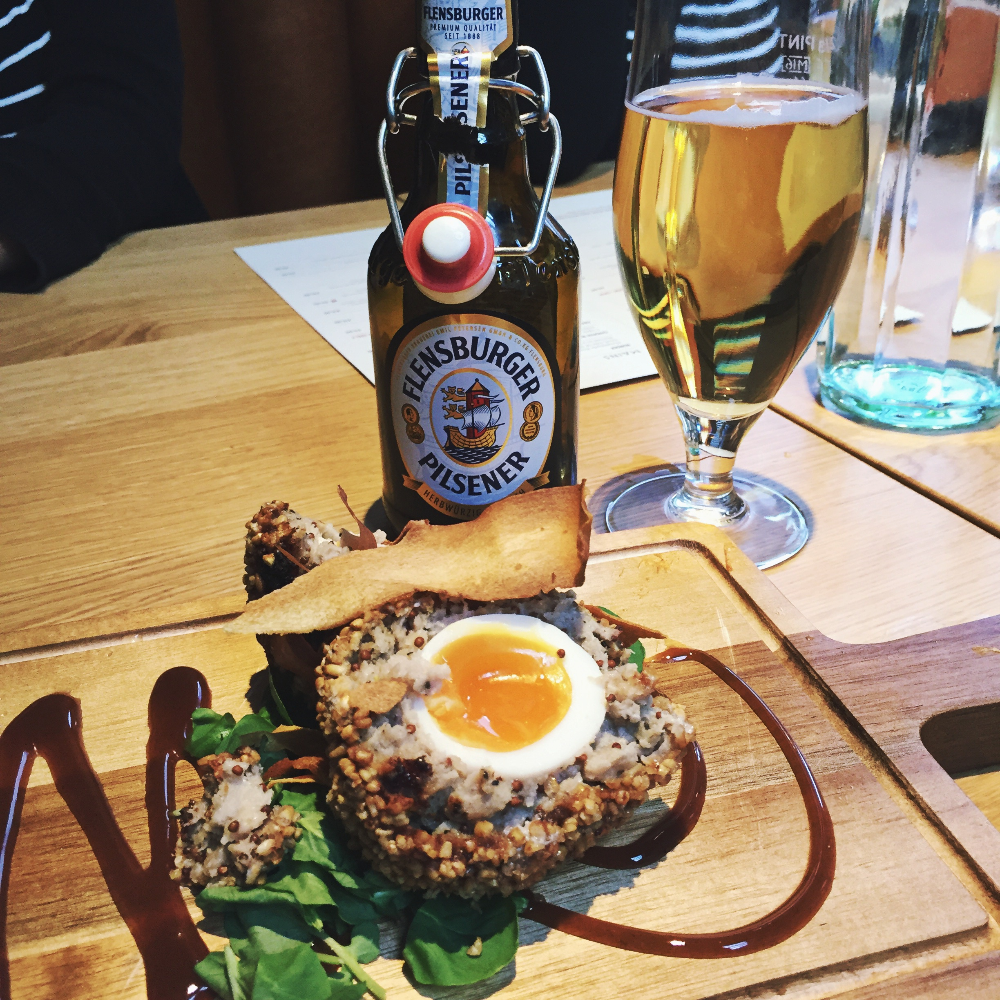
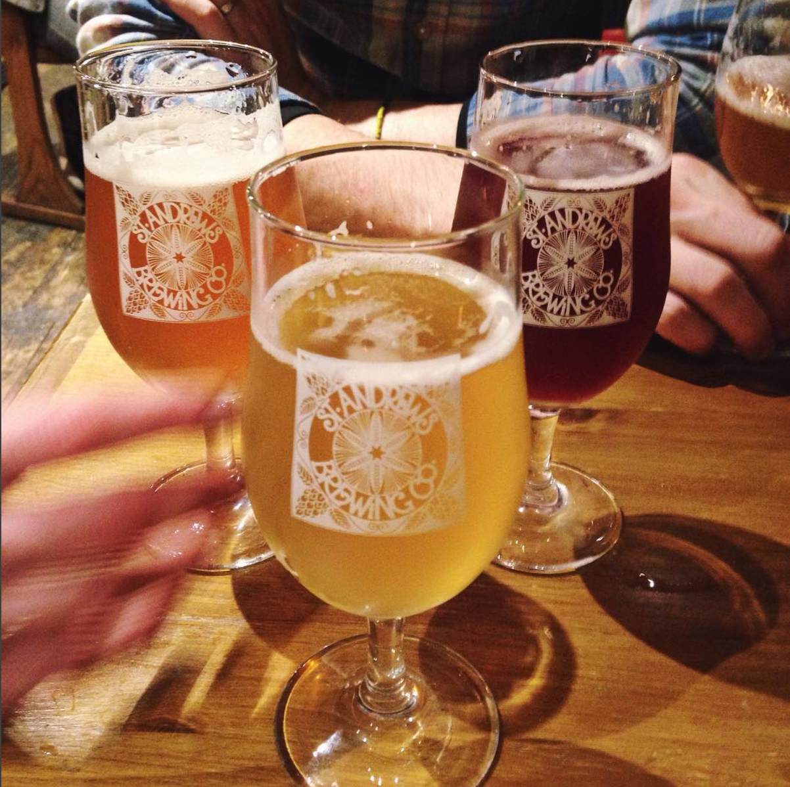

Around St Andrews
Keep up to date! Check out Luvians and St Andrews Brewing Company on Twitter!
Check our map for our fave picks around town!
In Town: Innis & Gunn Beer Kitchen

Found at [xxx North St], the newest addition to St Andrews beer scene is Beer Kitchen from Edinburgh's Innis and Gunn
In Town: Luvians Bottleshop
Hit up Luvians Bottleshop at 66 Market St for the best craft beer selection in town
In Town: St Andrews Brewing Company

In Town: Aikman's